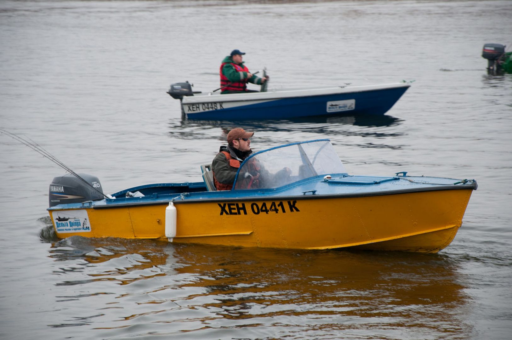
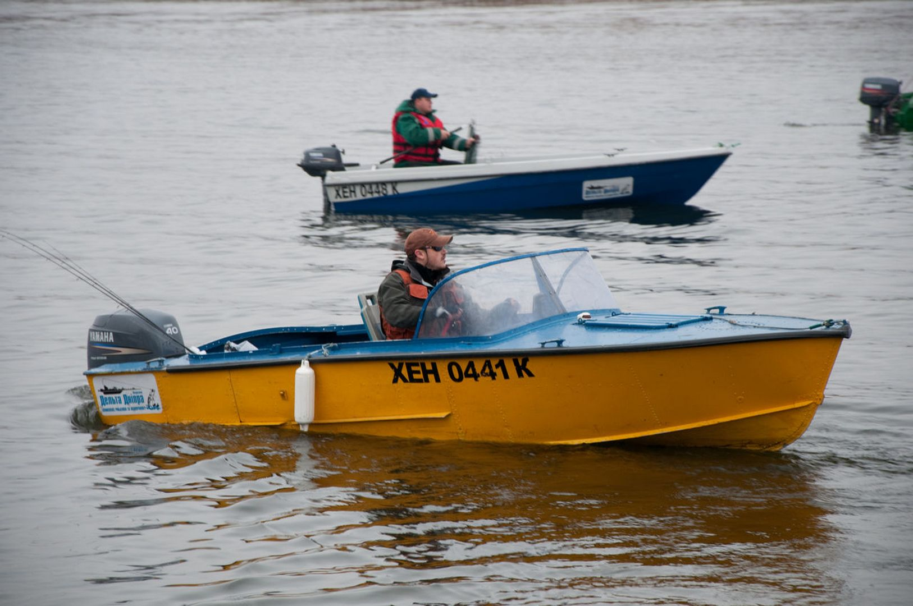

«Козак» - це еко-зона затишку та спокою, розташована у центрі Таврії з безліччю Історико-культурних пам’яток та духовних святинь. Поруч є ворота до Національного природного парку «Нижньодніпровський». Тільки природа, чисте повітря і атмосфера безтурботності!
Детальніше
 
